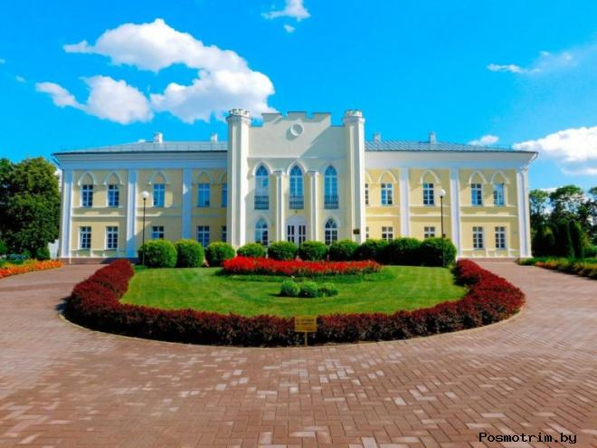
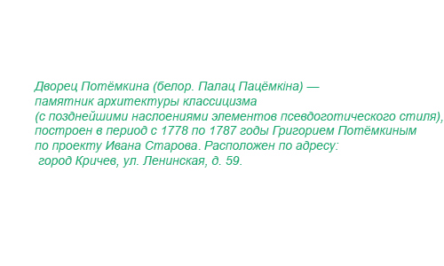

|
|
|
Вход Регистрация Реклама Контакты Для туристов |

История Дворца Потёмкина:В 1772 году состоялся первый раздел Речи Посполитой по которому Кричевское староство вошло в состав Российской империи. Первое время им управлял прежний владелец Ежи Мнишек, но из-за отказа присягнуть на верность Екатерине II, эта собственность в 1775 году была конфискована в пользу государства. Позже в 1776 году императрица подарила эти владения своему фавориту Григорию Потёмкину. Строительство дворца велось в Кричеве в период с 1778 по 1787 годы. Проект выполнил автор Таврического дворца в Петербурге Иван Старов. Здание в плане имеет вид монограммы «П» и «Е» (инициалы графа и императрицы). Рядом был разбит усадебный парк (сейчас сохранились лишь отдельные деревья). Дворец двухэтажный с центральным ризолитом на главном фасаде. В центре обоих этажей расположены большие круглые залы. Главный фасад фланкирован гранёными пилонами, которые завершаются зубцами и придают дворцу строгость и монументальность. Окна центрального ризолита — стрельчатые, окна боковых фасадов — со стрельчатыми сандриками. Внутренняя планировка — анфиладная (изменена в 1950-е годы). Всего насчитывалось более 60-и просторных комнат. На первом этаже по центральной оси находилась парадная группа помещений — вестибюль с лестницей и овальный зал. Помещения были богато отделаны лепными украшениями, имели уникальные парадные лестницы и систему редких каминов отделанных кафелем. За дворцом размещалось п-образное здание конюшен, фасады которых были отделаны аркатурой, и плодовый сад. Екатерина II прибыла в Кричев в разгар стужи 19 (30) января 1787 года во время путешествия в Крым. Во дворце она «изволила обедать и ночевать. На дворе перед дворцом Потёмкина, где пребывала государыня, горела великолепная иллюминация до самого разсвета». На следующий день утром императрица уехала далее в Чериков. В конце XVIII века Потёмкин либо продал[5] либо проиграл в карты свои кричевские владения шляхтичу Яну Голынскому. Во время городского пожара в 1840-е годы дворец сильно пострадал и был восстановлен с некоторыми изменениями. Чуть позже Стефан Голынский решил переделать дворец под современную архитектурную моду. Над окнами второго этажа были вылеплены стрельчатые сандрики (не сохранились). Центральный вход, который ранее украшал 4-колонный портик с балконом, стал украшен псевдоготическим ризалитом с гранёными пилонами, а также угловыми пилонами, которые завершались зубцами и напоминали башни. Позже была построена брама, стилизованная под каменные египетские пирамиды. В 1917 году все ценности были экспроприированы советской властью. В здании была открыта школа, в которой учились многие впоследствии известные кричевляне — дважды Герой Советского Союза генерал армии Иосиф Гусаковский, переводчик и литературовед, лауреат Сталинской премии третьей степени Евгений Мозольков, министр иностранных дел Белорусской ССР Кузьма Киселёв и другие. В 1950-е годы здание было перепланировано и здесь разместилась школа-интернат. Постепенно дворец пришёл в ветхое состояние и был заброшен. В 1980-х годах начались работы по реставрации дворца, но из-за нехватки финансирования памятник был законсервирован почти на 20 лет. В 2003 году здание было включено в Государственный список историко-культурных ценностей. Реставрация была завершена в 2008 году, во дворец переместились: Кричевский районный краеведческий музей и ЗАГС. |